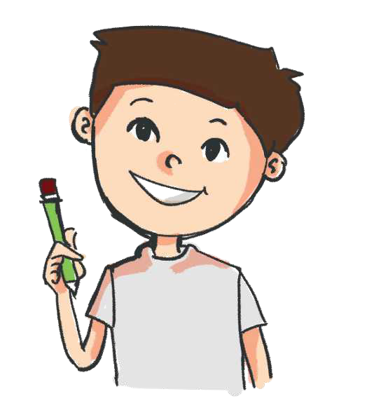

TEMATIKA 2: KARRIERA IME
4.LUAJMË “PROFESIONESH”
Ndihmë: si të punoj?
Mund ta tregosh me fjalë, me zë, me lëvizje ose me vizatim, si të vijë më lehtë. Kërko ndihmën e një shoku, një shoqeje ose të një të rrituri kur të duhet.
(VEPRIMTARI PRAKTIKE)

- Në këtë orë veprimtarie, ju do të zgjidhni të “imitoni” profesionin që dëshironi të ndiqni kur të rriteni.
- Përpiquni të gjeni një uniformë ose një pjesë të uniformës së këtij profesioni (nëse ai profesion ka një veshje të veçantë), p.sh., bluzë ose kapelë polici, stetoskop mjeku, kaskë muratori etj.
- Në mungesë të uniformës ju mund të gjeni edhe një mjet pune të këtij profesioni ose ta vizatoni në një fletë të madhe këtë mjet, si tabelë polici, metër rrobaqepësi, kapelë për kuzhinierin etj. Nëse mjetin apo mjetet e profesioneve do t’i paraqisni me vizatim, shkruani sipër fletës emrin e profesionit.
- Prezantoni para klasës profesionin që doni të ndiqni. Tregoni pse ju pëlqen. A e ka këtë profesion ndonjëri nga të afërmit tuaj?
- Përpiquni të imitoni një fragment nga profesioni juaj. Për këtë mund t’ju ndihmojë edhe ndonjë shok apo shoqe. P.sh., nëse ju pëlqen të bëheni mjek, imitoni një vizitë mjeku, sikur po vizitoni një pacient dhe shkruani një recetë me ilaçe.
- A përputhet ky profesion me shkathtësitë tuaja?